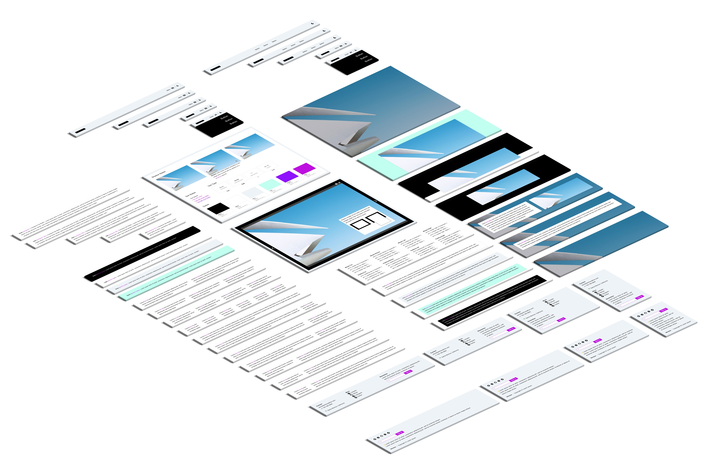
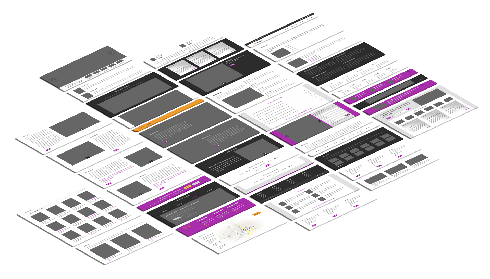

Patrn is an ongoing side project evolving as time permits.
This repo contains templates that have been built with a component methodology in mind. Included is a template page that outlines each component and how the blocks can be used to build out any style of layout.
This repo contains thirteen templates that have been built with a component methodology in mind. Included is a page that outlines each component and how the blocks can be used to build out any style of layout.
